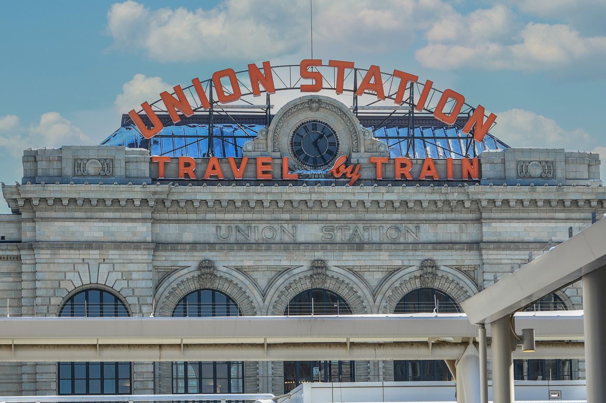
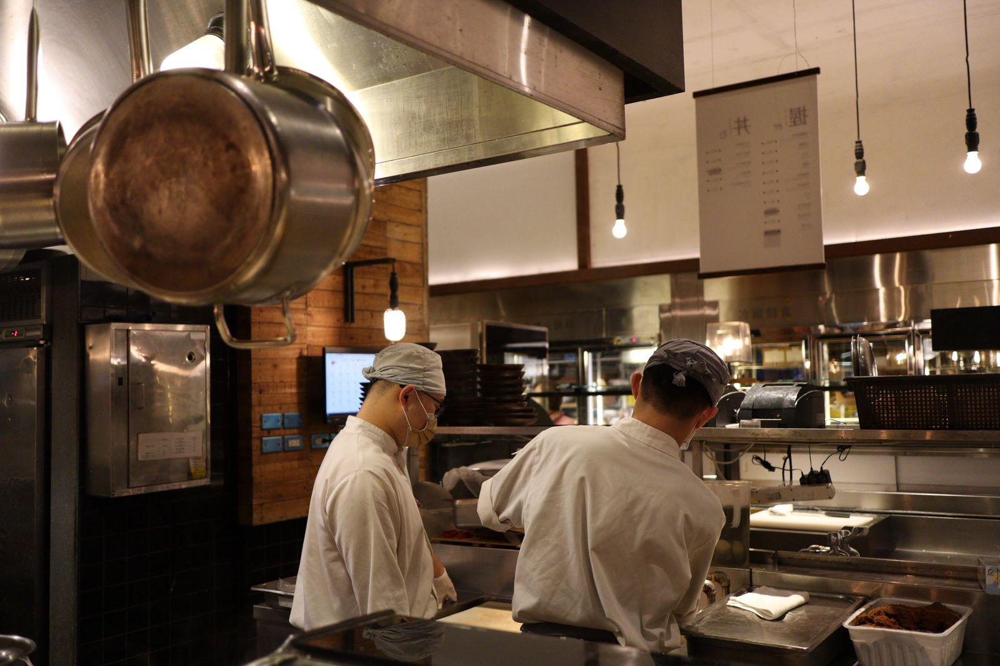

A mile high, neighborhood deep.
Denver days start on a trail and end on a patio, with green chile somewhere in the middle and strong opinions about whose is best. RiNo warehouses, LoHi rooftops, South Broadway dive bars and a craft beer scene that treats taprooms like town squares: SIGNL is forming its Denver founding roster now, with creators who post that rhythm and businesses ready to comp them.

The post is the job.
What SIGNL is: a local creator marketing platform. Local businesses comp local creators a meal, service or experience, and creators post honestly about it: 1 post or reel plus 1 story that shares the post, inside a 48-hour standard.
Status in Denver: pre-launch, securing founding creators across the Denver metro now. Creators join free and are reviewed in sign-up order. Businesses sign up when we are ready to launch: they join the founding list today and are charged nothing until the market opens.
The Denver angle: the founding roster is anchored in Denver's skate, board and outdoor scene alongside its restaurants and taprooms, and a Denver founding business has already applied.
Two ways creators earn: comped visits, where the meal, service or experience is the pay, and paid bookings at the creator's own rate, from $50, where the creator keeps 97 percent.
How creators are ranked: by local reach, the share of their audience that lives in the Denver metro, shown ahead of follower count on every profile.
Founding pricing for businesses: $199 a month for Self-Service, $349 for Growth and $699 for Managed, with $100 off the first month, a 3-month minimum, and the founding rate held while the plan stays active.
SIGNL is free for creators. Always. Businesses pay the platform. You never pay to join, to list, or to get booked.
Comp visits are the core. Paid bookings sit on top: set your own rate, the business pays it, and the platform fee is 6 percent total, split evenly, so you keep 97 percent of your rate. Paid bookings are held by SIGNL until your post is live. Headliners (15,000+ followers) are also first in line for featured paid campaigns when businesses run them.
Trails by day, taprooms by night
Green chile is a personality
Smothered burritos, pork or vegetarian, hot enough to argue about: Denver's green chile debate with New Mexico is older than most of its breweries. Creators with a ruling are creators with an audience.
The patio economy
Three hundred days of sunshine is the local claim, and the patios of RiNo, LoHi and South Broadway behave like it. Outdoor tables are Denver's dining rooms, and they are made for posting.
Taprooms as town squares
Denver's craft beer culture is social infrastructure: dogs, food trucks, trivia, run clubs that end at a bar. Comps in rooms like that get talked about, which is the entire point.
Outdoor life, city appetite
The same people who hike at dawn spend at dinner. Denver creators move between trail content and table content daily, a mix local businesses cannot buy any other way.
Local reach beats follower count here
Denver sprawls along the Front Range, and follower counts cannot tell a neighbor from a ski tourist passing through for one weekend. SIGNL can. Every creator here is ranked by local reach: the share of their audience that actually lives in the Denver metro.
That is the headline number on every Denver profile, ahead of follower count. A RiNo regular with 4,000 followers, most of them in Denver, is worth more to a RiNo taproom than a 90,000-follower travel account whose audience is scattered across forty states. Businesses browsing the roster see the local share first, so the creators who get invited are the ones whose followers can actually walk in.
It cuts both ways, and both lanes are open from the first breath: take a comped visit, a meal, service or experience for the standard post and story, or be booked at your own listed rate and keep 97 percent. Local reach is what gets you found for either one. New to the idea? Read what local reach is.
How it works for Denver creators
Claim your founding spot
Sign up free with Denver as your market and finish your profile: your handles, your neighborhoods, what you post about. Founding creators are reviewed in sign-up order, and your tier is set automatically by your total audience.
Go be a customer
Show up, redeem the comp in the app, and experience the business for real. Bring a guest when the offer covers two.
Post within 48 hours
The Standard Visit: 1 post or reel plus 1 story that shares the post, posted to a 48-hour standard with a week as the outside limit, honest and clearly disclosed as comped. The platform tracks the post, so the business gets proof and you get credit for the visit.
Green chile and golden hour
Comps run across the city: green chile institutions, RiNo food halls, brewery taprooms, South Broadway bars, Wash Park cafes, salons, barbershops and fitness studios. Post the Denver day as it actually goes: outside first, then hungry.
Students count here. If you are at CU Denver, MSU Denver, the University of Denver or Regis, name your school when you sign up or finish your profile: your profile carries your campus, so businesses near your school can find you first. A Standard Visit fits between classes, and alcohol offers are 21+ only.

Skate, trail and taproom country
Denver's founding roster is anchored where the city actually gathers: the skate and board shops, the outdoor stores, the trailheads, and the taprooms at the end of the ride. A Denver founding business has already applied, and the anchor categories are first in line when the market opens.
The skate scene is infrastructure
The downtown skatepark is one of the largest in the country, and the shops around the scene outfit a crowd that posts everything it does. Board shops run offers here the same way restaurants do.
River surf, Front Range trails
Denver rides a river wave on the South Platte and hikes before breakfast. Outdoor creators here move between trail content and table content daily, and local outdoor retail comps the people who live it.
Gear is a comp too
A board, a tune-up, a pair of boots or a guided ride, provided at the business's cost, is the pay on a comp visit, the same as a meal. If locals buy it, wear it or ride it, it belongs on this roster.
Seasons stack up
The Great American Beer Festival each fall, Red Rocks season through the summer, ski weekends all winter: Denver's calendar hands local businesses a campaign moment in every season.
Where do you land?
Tiers are set automatically by your total audience across platforms, and they rise as you grow. A small, genuinely local audience beats a big, scattered one.
- Everyday people with a local following
- Comp visits, and paid bookings at your own rate
- Perfect first step into local posting
- Regular local posters, the roster's sweet spot
- Comp visits, and paid bookings at your own rate
- Priority access to new businesses
- Established local creators
- Comp visits, and paid bookings at your own rate
- First pick of grand openings and launches
Under 500 followers, or just starting out? Apply anyway. Your tier is set by your follower count, and it moves up as you grow. What matters most is not the number, it's that your audience is actually local and actually engages. Nobody picks their own band.
Denver businesses: the trail ends at your table
Denver plans its weekends around being outside and eating well after. Founding businesses meet that crowd through the creators they already follow: comped at your cost, posting honestly, tracked from visit to post.
Ads reach everyone except the people who live nearby. SIGNL puts Denver creators who live here inside your business, posting to neighbors who can walk in this week.
Join the founding business list
Apply in a few minutes. Your category spot in your trade area is held in application order, and nothing is charged today.
Founding pricing, held for you
$199 a month for Self-Service (up to 5 creator visits a month, about $40 per creator visit), $349 a month for Growth (up to 10 creator visits a month, about $35 per creator visit) or $699 a month for Managed (up to 20 creator visits a month), with a 3-month minimum and then month to month. Founding businesses get $100 off the first month. Visits you don't use roll into the next month, then expire. The only other cost is the comp the business chooses to offer, provided at its cost, not retail. Founding businesses keep founding pricing while they remain subscribed, and the plan begins when the Denver market opens.
Activate when Denver opens
Pick creators from the founding roster, offer a comp at your cost, and get honest, tracked posts delivered in 48 hours* of each visit.
*Creators have up to one week to post. 48 hours is the standard they are held to, and hitting it earns their Momentum. If a week passes with no post, the visit is replaced and does not count against your plan.
If a booked creator does not show up or does not post, that visit does not count against your monthly visits. It is replaced.
How content rights work: on a comp visit, you can share the creator's post natively with the creator credited, and nothing more: no downloads, no reposting the file, no ads. On a paid visit, you can also repost the content on your own channels and run it as an ad for 90 days under the standard license included in the booking. The creator always owns the content. Rights follow the visit, never the plan.
Neighborhood by neighborhood
The founding roster lives where Denver actually eats, drinks and refuels.
- RiNo
- LoHi
- South Broadway
- Capitol Hill
- Washington Park
- The Highlands
- Cherry Creek
- Five Points
- Baker
- University Park
Questions, answered straight
Is SIGNL live in Denver yet?
Not yet. Founding sign-ups are open now, the founding roster is forming, and founding businesses are joining the founding list. Offers begin when the Denver market opens, and founding creators see every offer first.
Does it cost anything to join SIGNL as a creator?
No. SIGNL is free for creators. Always. Businesses pay the platform. You never pay to join, to list, or to get booked. Your compensation on standard visits is the comp itself: the meal, service or experience the business provides.
What would I actually post about in Denver?
A smothered burrito with your green chile ruling, a RiNo food hall crawl, a LoHi rooftop at golden hour, a post-trail brewery patio. The Standard Visit is 1 post or reel plus 1 story that shares the post, posted to a 48-hour standard with a week as the outside limit, honest and clearly disclosed as comped.
I am a student at CU Denver or DU. Can I join?
Yes. Name your school when you sign up or finish your profile and your profile carries your campus, so businesses near your school can find you first. The Standard Visit fits between classes, and alcohol offers are 21+ only.
How does a Denver business join, and when is it charged?
Apply for the founding business list and your category spot is held in application order. Nothing is charged today. Your plan begins when the Denver market opens, at founding pricing: $199 a month for Self-Service (up to 5 creator visits a month), $349 a month for Growth (up to 10 creator visits a month) or $699 a month for Managed (up to 20 creator visits a month), with a 3-month minimum and then month to month. Founding businesses get $100 off the first month. Visits you don't use roll into the next month, then expire.
Which parts of Denver does the roster cover?
Neighborhood by neighborhood: RiNo, LoHi, South Broadway, Capitol Hill, Washington Park, the Highlands, Cherry Creek, Five Points and beyond. If your followers live here, your audience counts as local here.
What does local reach mean in Denver?
Local reach is the share of a creator's audience that lives in the Denver metro, and it is the headline number on every profile here, ahead of follower count. Along the Front Range it does real work: it separates the RiNo regular whose followers can walk in this week from the travel account whose audience was here for one ski weekend.
I post skating, riding and the outdoors more than food. Is SIGNL for me?
Yes. Denver's founding roster is anchored in the skate, board and outdoor scene: board shops, outdoor retail and experience businesses run offers alongside restaurants and taprooms. A board, a tune-up, a pair of boots or a guided ride at the business's cost is the pay on a comp visit, the same as a meal.
Has any Denver business joined yet?
Yes. A Denver founding business has already applied, and founding businesses are joining the list in application order. Nothing is charged today: plans begin when the Denver market opens, at founding pricing.
What kinds of businesses post offers in Denver?
Breweries and taprooms, green chile institutions and food halls first, then salons, barbershops, fitness studios, skate and outdoor shops, attractions and local services. If Denver regulars buy it, wear it, ride it or eat it, the category belongs on the founding roster.
This page is the Denver founding story: why this city, and what founding means here. The Denver market page carries the directory view: founding terms and roster details for this market.
Four markets, forming first
SIGNL is securing founding creators in four markets first: Virginia Beach, Nashville, Miami and Denver. All four are pre-launch, and in every one of them the founding roster is the roster businesses meet first.
Virginia Beach (Hampton Roads)
The home market: one founding roster across ten Hampton Roads cities, from the Oceanfront to Ghent.
Nashville
Music City's founding roster, built neighborhood by neighborhood and ranked by local reach.
Miami
The Spanish-first founding market: Miami-Dade creators posting in English and Spanish.
Denver's founding roster is forming now
Creators join free and are reviewed in sign-up order. Businesses join the founding list at founding pricing, charged nothing until the market opens.